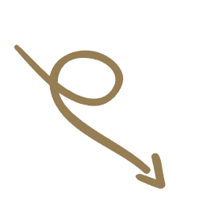
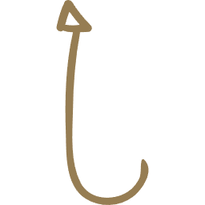

Open Me,
please!
Welcome to my portfolio website! Here, you'll find a collection of my projects, skills, and experiences. Feel free to explore and learn more about me and my work.
I am an open book!
About Me
Hi! I'm Carolina, an AV Systems Engineer based in Barcelona.
That's me :)

What I like!
- Board Games like... a lot
- Cooking
- Photography
- Magic
- Art
Try to find easter eggs related to my interests throughout the site :p
What motivates me?
As you may have noticed, I like bringing art and technology together.
I also place importance on accessibility, social and environmental responsibility.
My Education
I am currently studying the Intelligent Interactive Systems Master's program at UPF.
I graduated as an AV Systems Engineer at UPF in 2023.
I also did my Erasmus at Maynooth University, Ireland in 2022.
My work
I have been working as a researcher in the Interactive Technologies Group (GTI) at UPF since 2021. I've had the chance to work in different projects and explore various technologies. Here's a few:
- Emerald Project: Exploring CV and animation techniques to generate 3D animations from monocular videos.
- SignOn Project: Improved LipSync system for virtual avatars.
Skills
- 3D Graphics (Three.js, WebGL, GLSL, R3F)
- Programming (JavaScript, Python, C#)
- Web Development (HTML, CSS, React)
bla bla bla...
If you paid attention, you might have guessed that I was raised in Barcelona.
I speak Catalan, Spanish, and English.
I have mixed feelings towards the Oxford comma...
Contact Me
If you'd like to get in touch, feel free to connect with me on LinkedIn.
LinkedIn: @carolina-dcf
GitHub: @carolinadcf
You will also find a more detailed version of my CV there.
Acknowledgements
Thanks to the amazing open source projects and communities that make this portfolio possible.
Special thanks to:
- Three.js: 3D Rendering
- Freesound: Music
- Sketchfab: 3D Models
All corresponding credits are given where due in code.